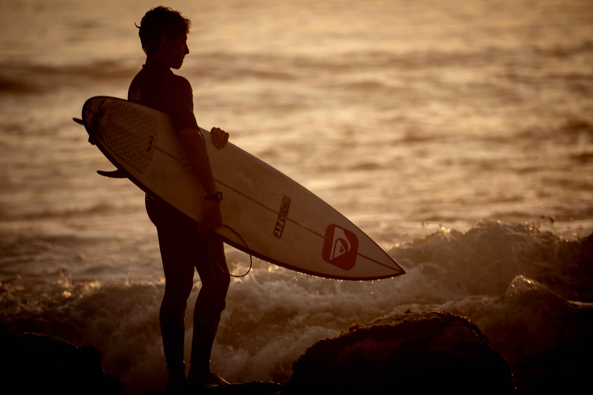
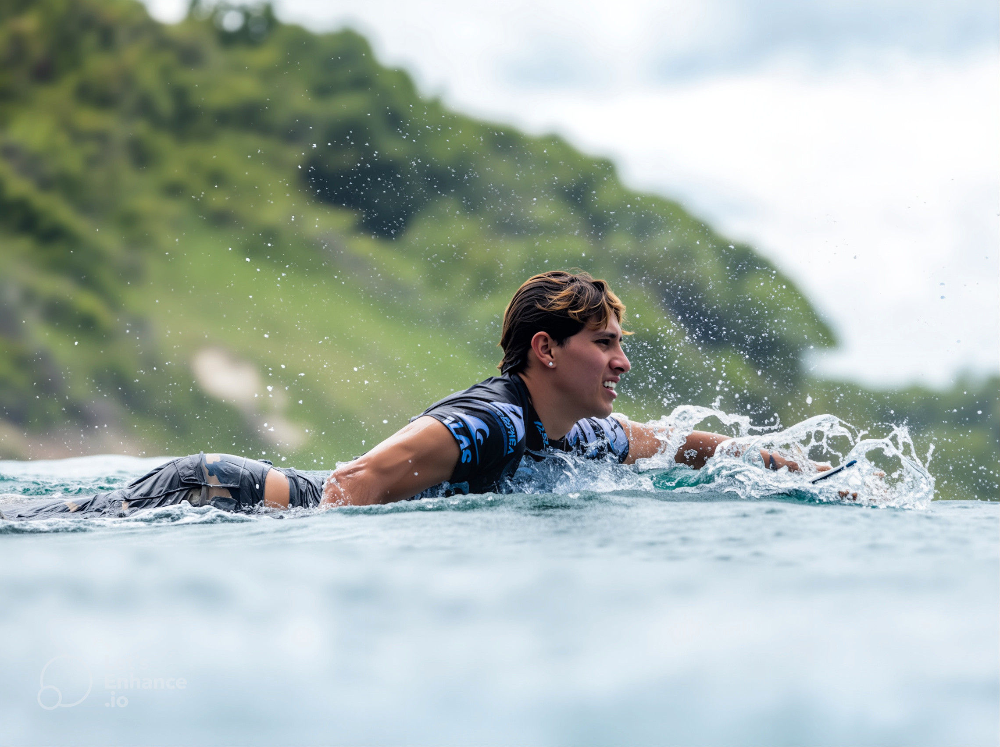
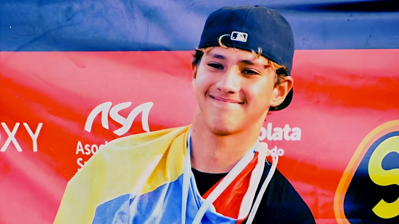
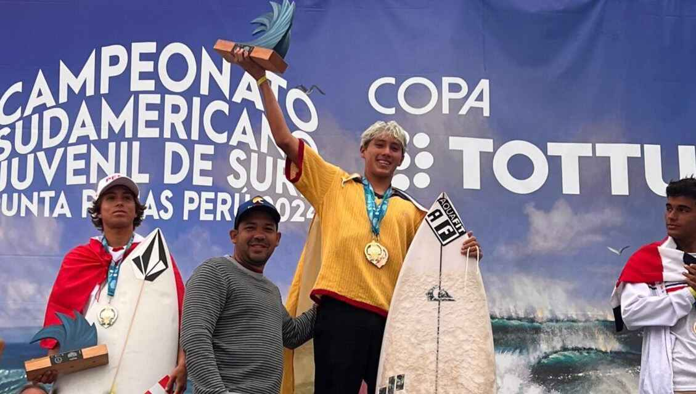
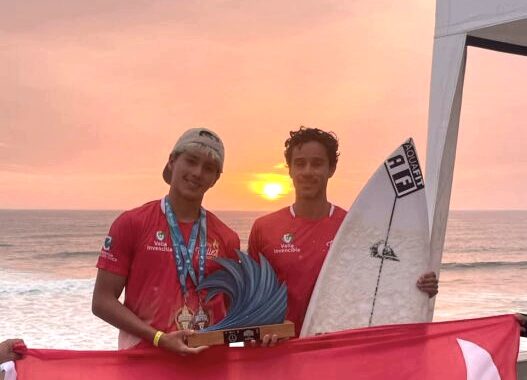

ROMEO CHÁVEZ GARCÍA
Next Generation Power in Shortboard Surfing
"Surfear es mi lenguaje, el océano mi escenario."

Atleta Profesional de Surf | Aspirante Olímpico LA 2028 | Cali, Colombia 🇨🇴
Propuesta de Colaboración Red Bull 2026
SOBRE MÍ

Soy un surfista profesional colombiano con base en Cali, Colombia. Comencé a surfear a los 5 años, y desde entonces el mar se convirtió en mi refugio, mi escuela, mi campo de batalla.
Desde los 9 años competía en torneos nacionales, a los 10 enfrentaba categorías mayores con valentía. Hoy, soy Campeón Sudamericano Juvenil Sub-18 (2024), 5º lugar en el ISA World Junior Surfing Games y aspirante olímpico para Los Ángeles 2028.
Represento en competencias internacionales los valores del deporte latinoamericano: talento, disciplina y corazón. Mi historia es de superación, pasión y conexión profunda con el océano. Cada ola que domino, cada competencia que gano, refuerza mi compromiso con la excelencia y con inspirar a nuevas generaciones de surfistas costeros.
DATOS GENERALES
Edad17 años (Nac. 2008)
NacionalidadColombiana 🇨🇴
BaseCali, Colombia
DisciplinaShortboard alto rendimiento
CategoríasJunior (Sub-18) y Open
ProyecciónChampionship Tour WSL & JJ.OO. LA 2028
PRESENCIA EN MEDIOS


Instagram: @romeito_chavez
+15K seguidores - Comunidad joven, apasionada por el surf, el deporte y la vida al aire libre. Contenido orgánico de alta calidad: videos de tubos, maniobras aéreas, entrenamientos y vida de viaje.
Cobertura en Medios
- Ministerio del Deporte: "El surf atrapó a Romeo Chávez" - Historia de superación tras el terremoto de 2016
- VAVEL, Futbolred, Comité Olímpico Colombiano: Destacado como promesa del surf latinoamericano
- Medios internacionales de surf: Cobertura en eventos WSL e ISA
BENEFICIOS PARA LA MARCA
- Exposición en redes sociales con +15K seguidores activos y fieles
- Asociación con valores positivos: dedicación, superación, humildad y pasión
- Contenido orgánico de alto impacto: fotos y videos en condiciones reales (olas, viajes, competencias)
- Conexión auténtica con la comunidad surf en Latinoamérica y EE.UU.
- Imagen de apoyo al deporte joven y olímpico, reforzando responsabilidad social
- Posicionamiento en eventos internacionales (PASA, ISA, WSL, Juegos Olímpicos 2028)
Patrocinado por:
CONTACTO & REPRESENTANTE

"El próximo capítulo del surf latinoamericano se escribe con potencia, aire y corazón."
[CÓDIGO QR]
ESCANEAR PARA
MEDIA KIT DIGITAL
Documento generado para propuesta de colaboración Red Bull 2026.
Todos los datos son verificables y corresponden a la trayectoria oficial del atleta.